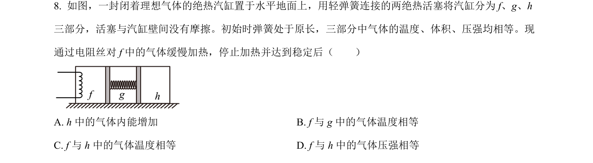
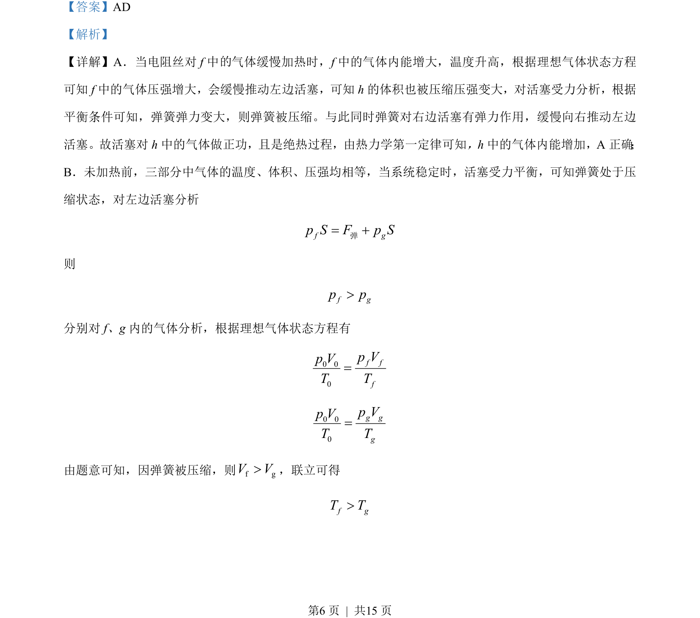
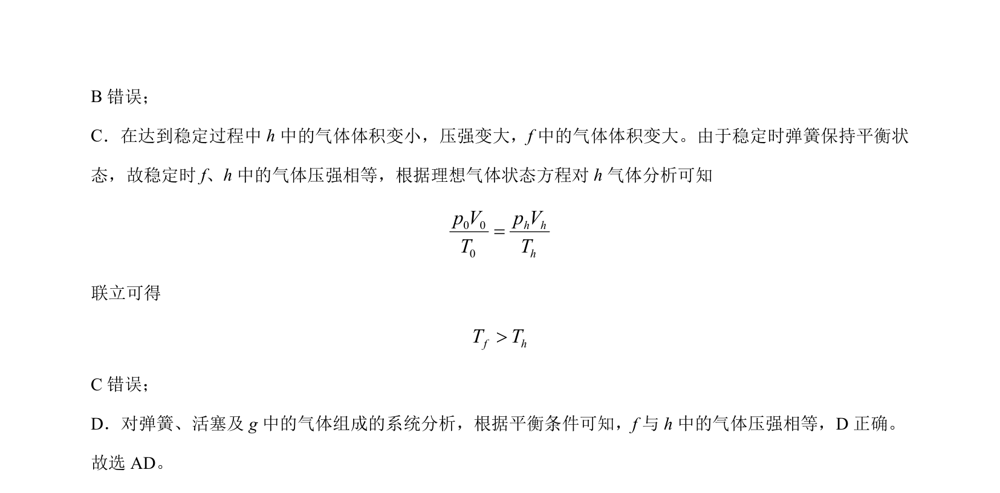

考点：理想气体状态方程 热力学第一定律 受力平衡

考查理想气体状态方程、热力学第一定律及活塞弹簧受力平衡的综合判断。


📄 原 PDF 第 6 页：
素材/真题/吉林/2008-2024·（吉林）物理高考真题/2023年高考物理试卷（新课标）（解析卷）.pdf
A. h 中的气体内能增加 B. f与 g 中的气体温度相等 C. f与 h中的气体温度相等 D. f 与 h 中的气体压强相等
【答案】AD 【解析】 【详解】A．当电阻丝对 f 中 气体缓慢加热时， f 中的气体内能增大，温度升高，根据理想气体状态方程 可知 f中的气体压强增大，会缓慢推动左边活塞，可知h的体积也被压缩压强变大，对活塞受力分析，根据 平衡条件可知，弹簧弹力变大，则弹簧被压缩。与此同时弹簧对右边活塞有弹力作用，缓慢向右推动左边 活塞。故活塞对 h 中的气体做正功，且是绝热过程，由热力学第一定律可知，h 中的气体内能增加，A 正确 ； B．未加热前，三部分中气体的温度、体积、压强均相等，当系统稳定时，活塞受力平衡，可知弹簧处于压 缩状态，对左边活塞分析 f gp S F p S= +弹 则 f gp p> 分别对 f、g 内的气体分析，根据理想气体状态方程有 0 00f ffp Vp VT T=0 00g ggp Vp VT T= 由题意可知，因弹簧被压缩，则f gV V>，联立可得 f gT T> 的